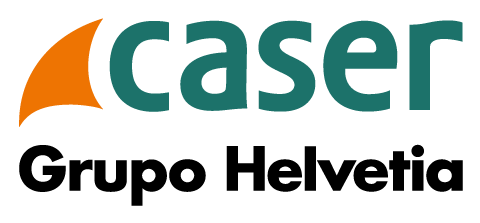

SEGURO MÉDICO CASER PARTICULARES · 2026
Un asesor Caser te contactará en minutos
Las tres modalidades del seguro de salud Caser para particulares cubren necesidades distintas. Compara y elige la que mejor encaja con tu perfil y presupuesto en 2026.
Acceso directo a médicos de cabecera y más de 50 especialidades médicas en toda España.
Radiografías, ecografías, análisis clínicos y pruebas de imagen incluidos en tu póliza.
Atención de urgencias las 24 horas del día, los 365 días del año en los mejores centros.
Ingreso hospitalario con habitación individual y atención especializada incluida.
Cirugías programadas y urgentes en hospitales y clínicas de primer nivel.
Sesiones de rehabilitación física incluidas para una recuperación más rápida y efectiva.
Consulta con tu médico desde cualquier lugar a través de videollamada o chat en la app.
Cobertura médica cuando viajes al extranjero incluida en las modalidades Adapta y Prestigio.
Cobertura dental completa incluida en la modalidad Adapta para toda la familia.
Cuatro modalidades para adaptarse a tus necesidades y presupuesto, con o sin copago.
Somos agente exclusivo Caser con años de experiencia ayudando a personas a encontrar el seguro que mejor se adapta a su vida.
Te explicamos todas las opciones sin presiones para que elijas la que realmente necesitas.
Si tienes algún problema con tu seguro, te ayudamos a gestionarlo directamente con Caser.
Tu seguro empieza a funcionar desde el momento en que firmas la póliza, sin periodos de carencia en urgencias.
Al contratar a través de nosotros accedes a las mejores condiciones y descuentos disponibles en el mercado.
Preguntas y respuestas sobre Caser Salud Particulares
Depende de tu edad, necesidades y si buscas copagos o no. Nuestros asesores te recomendarán entre Adapta, Salud Integral, Salud +60 o Integral 10 Sin Copago, según tu caso concreto.
Sin copago: no pagas por uso en la mayoría de servicios. Con copago: prima más baja y pequeños pagos por uso. Copago reducido: combinación de ambas, con algunos actos sin coste y otros con copagos bajos.
La mejor opción es Caser Salud +60, un seguro pensado para seniors: sin cuestionario médico complicado, precios ajustados, 5 servicios gratuitos al año y sin copago en medicina digital.
Sí. Además, cuantos más asegurados se incluyan, mayores descuentos.
Sí, todos los seguros Caser Salud incluyen medicina digital 24/7, con consultas por chat, vídeo, receta electrónica y seguimiento.
Tendrás acceso al cuadro médico completo de Caser, uno de los más amplios de España: más de 45.000 profesionales y más de 13.000 centros y clínicas en todas las provincias.
Así es. En Caser Seguros contamos con uno de los Cuadros Médicos más amplios de España, para que elijas libremente entre los más de 45.000 profesionales y 13.000 centros de salud incluidos. ¡Además podrás acudir a todas las consultas y pruebas sin listas de espera!
Sí, por lo general existe una permanencia anual debido a los precios ajustados y coberturas ofrecidas. Te informaremos exactamente según el producto.
Todas nuestras pólizas pueden incluir hasta 10 asegurados, es decir, 9 más el tomador. En Caser Seguros nos adaptamos a cada caso de forma personalizada.
La activación suele hacerse en 24–48 horas desde la aceptación del cuestionario médico y la firma digital.
Sí, todos los productos incluyen urgencias ambulatorias. Los productos con hospitalización (Adapta, Integral con Copago e Integral 10) incluyen también urgencias hospitalarias.
Si quieres conocer más detalles o resolver dudas antes de contratar, puedes solicitar información y un asesor especializado te ayudará a elegir la opción que mejor encaje con tus necesidades.
Puedes solicitar una llamada gratuita y un asesor especializado te ayudará a elegir la modalidad que mejor encaje contigo. Solo tienes que dejar tus datos y te llamamos cuando mejor te venga.
Solicita tu presupuesto personalizado ahora y empieza a disfrutar de los mejores seguros de salud de Caser.